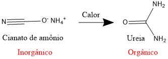

Os compostos orgânicos: a linguagem molecular da vida em ação!

O que é Química Orgânica?
A Química Orgânica é uma ramificação da química que se dedica ao estudo dos compostos que contêm carbono,
chamados compostos orgânicos. Essa área examina suas propriedades, como o ponto de ebulição, que varia de
acordo com a estrutura e a composição dos compostos.
Além disso, a Química Orgânica investiga as reações desses compostos e os métodos para sintetizá-los,
utilizando técnicas como espectroscopia no infravermelho e ressonância magnética nuclear para analisar os
átomos de hidrogênio e carbono nas moléculas. As substâncias orgânicas podem ser representadas de duas maneiras:
através de uma estrutura em ziguezague ou mostrando os átomos de carbono e hidrogênio, com ou sem traços que
conectam os átomos.
História da Química Orgânica
As propriedades dos compostos orgânicos eram conhecidas muito antes de Cristo. No entanto, a Química Orgânica, como a entendemos hoje, começou a se desenvolver no final do século XVIII e no início do século XIX. Em 1780, o sueco Torbern Bergman foi o primeiro a classificar os compostos químicos em orgânicos e inorgânicos. Para ele, os compostos orgânicos eram aqueles encontrados nos seres vivos, enquanto os inorgânicos estavam ligados a substâncias minerais. Contudo, a responsabilidade por essa classificação é atribuída a Jöns Jacob Barzelius, que usou o termo em um livro em 1807. Nos primórdios, a Química Orgânica focava principalmente em materiais de origem animal e vegetal. Barzelius acreditava que, devido à complexidade dessas substâncias, os compostos orgânicos só poderiam ser produzidos em organismos vivos, devido à presença de uma "força vital" (Teoria da Força Vital). Em 1828, essa teoria foi desafiada pelo químico Friedrich Wöhler, que, ao aquecer cianato de amônio, conseguiu transformar esse composto inorgânico em ureia, uma substância orgânica encontrada na urina dos mamíferos.
Com o acúmulo de conhecimento, em 1857, os químicos Friedrich August Kekulé e Archibald Scott Couper propuseram que o átomo de carbono pode formar quatro ligações, criando cadeias com outros carbonos. Kekulé também foi responsável por estabelecer a definição moderna de Química Orgânica.